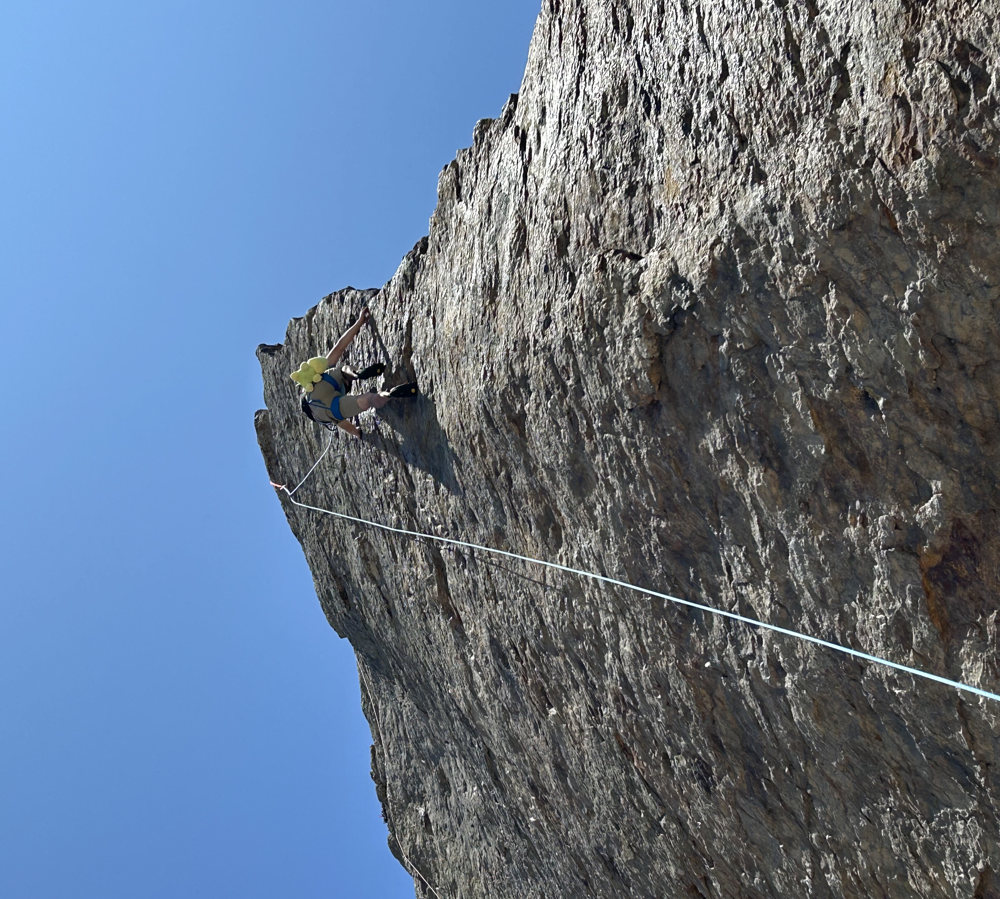
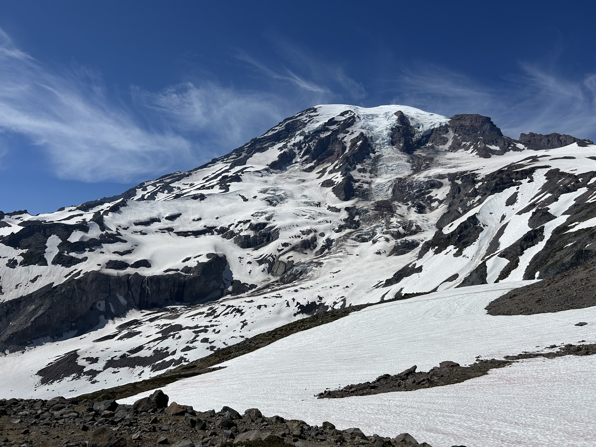

Introduction
Hello! My name is Gabren Sysavath. I am currently in my second year as a Computer Science major at Cal Poly Pomona. My favorite things to do when im not on the computer are hiking and climbing.
Hobbies
Climbing
In my first semester at CPP I got interested in the climbing wall at school and when I went to try it out, I discovered I really loved it! I have been climbing indoors and outdoors since then and it has quickly become one of my favorite pastimes.

Hiking
I've always hiked with my family, but I really started to love it during 2025 Summer. Now I can't get enough!
